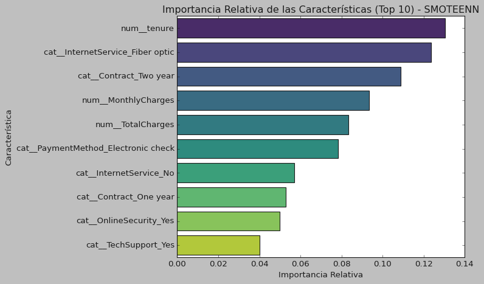
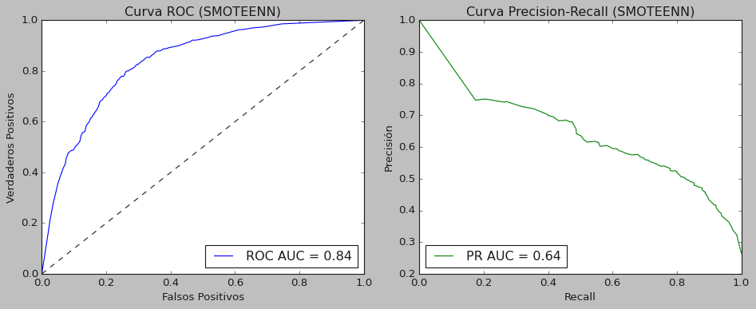

Result Charts
Most Important Features - Random Forest with SMOTEENN:

ROC Curve - Random Forest with SMOTEENN:

ROC Curve - Multi-Layer Perceptron with RandomUnderSampler:

Analysis of service cancellation (churn) in telecommunications to identify customers with high probability of leaving and enable preventive retention strategies.


You can explore the source code for this project: